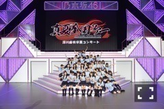
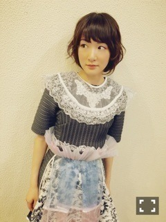

| 2016/06 22 Wed | 宝石が流れてた |
いこまですっっ！！
先ずはっ
まいまいが乃木坂46を卒業しました！
まいまい乃木坂の活動お疲れ様でした〜ヽ(・∀・)ノ
私、まいまいが卒業ってなってから、
寂しい気持ちはもちろんあったけど、
まいまいの姿をみていて、
リハの時、お仕事のとき
あ、この人は信念を持って卒業するんだって
分かったから涙は出なかったよ。
むしろ、静岡のライブでずっとまいまいを見ていたのだけれど
本当に楽しそうで、
まいまいの頬を伝う涙は宝石の様にキラキラしていました。
あぁ
この人綺麗だ
って見惚れていました。
まいまいの優しさの中の強さ。
分かっていたつもりだけど、
最後の最後にぐわーって伝わってきて
こんな人と乃木坂46になれて良かったし、
素晴らしいまいまいという1人の女性の節目に
メンバーとして送り出す事が出来て自分も良かったなと思います。
ライブに来てくださったファンの皆さまも
きっとまいまいの人としての温かさに触れて家路についたと思います。
まいまいありがとうっ！！
まいまいの優しさは、乃木坂46にこれからも必要な物です！！
私達が絶えさせない様に乃木坂を高めていくからね

今度、ごはんヨロピクピク〜


遡りますが、
46時間TVから、京都でのアルバム発売記念個別握手会まで皆さまありがとうございましたっヽ(・∀・)ノ

この衣装めためたかわいい〜


この日は普段着れない歌衣装を着ました〜ヽ(・∀・)ノ
次の握手会も楽しみっっ
生駒は、生駒が生きれる範囲で生きて行きまする

へばなっ☆彡
コメント(1339)
2016/06/22 14:12